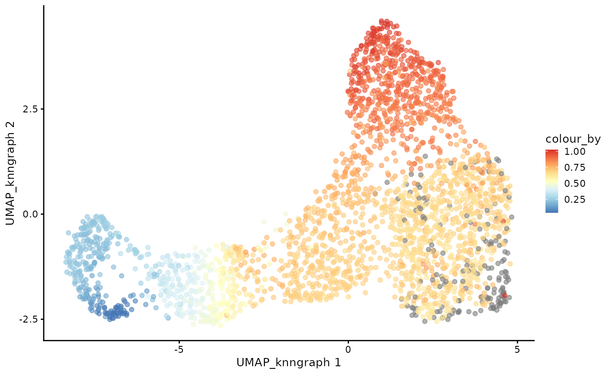

Single-cell immune repertoire trajectory analysis with dandelionR and slingshot
2025-08-08
dandelionR_with_slingshot.RmdForeword
In this vignette, we will demonstrate how to perform TCR trajectory
analysis using the dandelionR package in conjunction with
slingshot.
Installing slinshot
if (!requireNamespace("BiocManager", quietly = TRUE)) {
install.packages("BiocManager")
}
if (!requireNamespace("slinghot", quietly = TRUE)) {
BiocManager::install("slingshot")
}Load the required libraries and data
library(dandelionR)
library(scRepertoire)
library(scater)
data(sce_vdj)We will also set the seed so that the plots and results are consistent.
set.seed(123)Setup the data as per the other vignettes
We will use the full SingleCellExperiment object
sce_vdj that contains enough cells to demonstrate the
trajectory analysis with slingshot.
sce_vdj <- setupVdjPseudobulk(sce_vdj,
already.productive = FALSE,
allowed_chain_status = c(
"Single pair", "Extra pair",
"Extra pair-exception", "Orphan VDJ",
"Orphan VDJ-exception"
)
)
plotUMAP(sce_vdj, color_by = "anno_lvl_2_final_clean")
Milo object and neighbourhood graph construction
We will use miloR to create the pseudobulks based on the gene expression data. The goal is to construct a neighbourhood graph with many neighbors with which we can sample the representative neighbours to form the objects.
library(miloR)
milo_object <- Milo(sce_vdj)
milo_object <- buildGraph(milo_object, k = 30, d = 20, reduced.dim = "X_scvi")
milo_object <- makeNhoods(milo_object,
reduced_dims = "X_scvi", d = 20,
prop = 0.3
)
Construct pseudobulked VDJ feature space
Next, we will construct the pseudobulked VDJ feature space using the neighbourhood graph constructed above. We will also run PCA on the pseudobulked VDJ feature space.
pb.milo <- vdjPseudobulk(milo_object,
mode_option = "abT",
col_to_take = "anno_lvl_2_final_clean"
)Inspect the newly created pb.milo object.
pb.milo## class: Milo
## dim: 151 499
## metadata(0):
## assays(1): Feature_space
## rownames(151): TRBV10-1 TRBV10-2 ... TRAJ8 TRAJ9
## rowData names(0):
## colnames(499): 2463 147 ... 977 533
## colData names(3): anno_lvl_2_final_clean
## anno_lvl_2_final_clean_fraction cell_count
## reducedDimNames(0):
## mainExpName: NULL
## altExpNames(0):
## nhoods dimensions(2): 499 2657
## nhoodCounts dimensions(2): 1 1
## nhoodDistances dimension(1): 0
## graph names(0):
## nhoodIndex names(1): 0
## nhoodExpression dimension(2): 1 1
## nhoodReducedDim names(0):
## nhoodGraph names(0):
## nhoodAdjacency dimension(2): 1 1We can compute and visualise the PCA of the pseudobulked VDJ feature space.
pb.milo <- runPCA(pb.milo, assay.type = "Feature_space", ncomponents = 20)
plotPCA(pb.milo, color_by = "anno_lvl_2_final_clean")TCR trajectory inference using Slingshot
In the original dandelion Python package, trajectory inference is performed using the palantir package. Here, we instead use the Slingshot package.
library(slingshot)input
Slingshot requires a matrix representing cells in a reduced-dimensional space and a vector of cluster labels. Here, we use PCA for dimensionality reduction and the column anno_lvl_2_final_clean from colData as the cluster labels.
table(colData(pb.milo)[["anno_lvl_2_final_clean"]])##
## faABT(ENTRY) faCD4+T faCD8+T faDP(P)_T faDP(Q)_T
## 98 185 106 49 61Visualization
pseudotime of each lineage, if the pseudobulk is with value NA, it will not appear on the phage.
library(fields)
# make a color palette from blue to red
colors <- colorRampPalette(rev(c("#d7191c", "#fdae61", "#ffffbf", "#abd9e9", "#2c7bb6")))(50)
plot(reducedDims(pb.milo)$PCA, col = colors[cut(pb.milo$slingPseudotime_1, breaks = 50)], pch = 16, asp = 1)
lines(SlingshotDataSet(pb.milo), lwd = 2, col = "black")
image.plot(
legend.only = TRUE,
zlim = range(pb.milo$slingPseudotime_1, na.rm = TRUE),
col = colors,
legend.lab = "Pseudotime"
)
plot(reducedDims(pb.milo)$PCA, col = colors[cut(pb.milo$slingPseudotime_2, breaks = 50)], pch = 16, asp = 1)
lines(SlingshotDataSet(pb.milo), lwd = 2, col = "black")
image.plot(
legend.only = TRUE,
zlim = range(pb.milo$slingPseudotime_2, na.rm = TRUE),
col = colors,
legend.lab = "Pseudotime"
)Transfer
The next step is to project the pseudotime information from the pseudobulks back to each cell in the dataset. If the cell do not belong to any of the pseudobulk, it will be removed. If a cell belongs to multiple pseudobulk samples, its value should be calculated as a weighted average of the corresponding values from each pseudobulk, where each weight is inverse of the size of the pseudobulk. Pseudobulks with NA values are excluded during the projection. If all pseudobulks associated with a cell have NA values, the projected value for that cell will also be NA. ## Project pseudobulk data to each cell
cdata <- projectPseudotimeToCell(milo_object, pb.milo, value_key = c("slingPseudotime_1", "slingPseudotime_2"))Visualise the trajectory data on a per cell basis
The cell with NA value will in grey.
pal <- colorRampPalette(rev((RColorBrewer::brewer.pal(9, "RdYlBu"))))(255)
plotUMAP(cdata, color_by = "anno_lvl_2_final_clean", dimred = "UMAP_knngraph")
plotUMAP(cdata, color_by = "slingPseudotime_1", dimred = "UMAP_knngraph") +
scale_color_gradientn(colors = pal)
plotUMAP(cdata, color_by = "slingPseudotime_2", dimred = "UMAP_knngraph") +
scale_color_gradientn(colors = pal)
And that’s it! We have successfully inferred the trajectory of the
T-cells in this dataset with slingshot!
Session info
## R version 4.5.1 (2025-06-13)
## Platform: x86_64-pc-linux-gnu
## Running under: Ubuntu 24.04.2 LTS
##
## Matrix products: default
## BLAS: /usr/lib/x86_64-linux-gnu/openblas-pthread/libblas.so.3
## LAPACK: /usr/lib/x86_64-linux-gnu/openblas-pthread/libopenblasp-r0.3.26.so; LAPACK version 3.12.0
##
## locale:
## [1] LC_CTYPE=C.UTF-8 LC_NUMERIC=C LC_TIME=C.UTF-8
## [4] LC_COLLATE=C.UTF-8 LC_MONETARY=C.UTF-8 LC_MESSAGES=C.UTF-8
## [7] LC_PAPER=C.UTF-8 LC_NAME=C LC_ADDRESS=C
## [10] LC_TELEPHONE=C LC_MEASUREMENT=C.UTF-8 LC_IDENTIFICATION=C
##
## time zone: UTC
## tzcode source: system (glibc)
##
## attached base packages:
## [1] stats4 stats graphics grDevices utils datasets methods
## [8] base
##
## other attached packages:
## [1] fields_16.3.1 viridisLite_0.4.2
## [3] spam_2.11-1 slingshot_2.16.0
## [5] TrajectoryUtils_1.16.1 princurve_2.1.6
## [7] miloR_2.4.1 edgeR_4.6.3
## [9] limma_3.64.3 scater_1.36.0
## [11] scuttle_1.18.0 SingleCellExperiment_1.30.1
## [13] SummarizedExperiment_1.38.1 Biobase_2.68.0
## [15] GenomicRanges_1.60.0 GenomeInfoDb_1.44.1
## [17] IRanges_2.42.0 S4Vectors_0.46.0
## [19] BiocGenerics_0.54.0 generics_0.1.4
## [21] MatrixGenerics_1.20.0 matrixStats_1.5.0
## [23] scRepertoire_2.4.0 ggplot2_3.5.2
## [25] dandelionR_1.1.4 BiocStyle_2.36.0
##
## loaded via a namespace (and not attached):
## [1] cubature_2.1.4 splines_4.5.1
## [3] tibble_3.3.0 polyclip_1.10-7
## [5] xts_0.14.1 lifecycle_1.0.4
## [7] globals_0.18.0 lattice_0.22-7
## [9] MASS_7.3-65 magrittr_2.0.3
## [11] vcd_1.4-13 sass_0.4.10
## [13] rmarkdown_2.29 jquerylib_0.1.4
## [15] yaml_2.3.10 sp_2.2-0
## [17] cowplot_1.2.0 RColorBrewer_1.1-3
## [19] maps_3.4.3 abind_1.4-8
## [21] purrr_1.1.0 ggraph_2.2.1
## [23] nnet_7.3-20 pracma_2.4.4
## [25] tweenr_2.0.3 evmix_2.12
## [27] GenomeInfoDbData_1.2.14 ggrepel_0.9.6
## [29] irlba_2.3.5.1 listenv_0.9.1
## [31] iNEXT_3.0.2 MatrixModels_0.5-4
## [33] RSpectra_0.16-2 parallelly_1.45.1
## [35] DelayedMatrixStats_1.30.0 pkgdown_2.1.3
## [37] codetools_0.2-20 smoother_1.3
## [39] DelayedArray_0.34.1 ggforce_0.5.0
## [41] tidyselect_1.2.1 UCSC.utils_1.4.0
## [43] farver_2.1.2 ScaledMatrix_1.16.0
## [45] viridis_0.6.5 jsonlite_2.0.0
## [47] BiocNeighbors_2.2.0 e1071_1.7-16
## [49] tidygraph_1.3.1 progressr_0.15.1
## [51] Formula_1.2-5 survival_3.8-3
## [53] ggalluvial_0.12.5 systemfonts_1.2.3
## [55] tools_4.5.1 ragg_1.4.0
## [57] stringdist_0.9.15 Rcpp_1.1.0
## [59] glue_1.8.0 gridExtra_2.3
## [61] SparseArray_1.8.1 laeken_0.5.3
## [63] xfun_0.52 ranger_0.17.0
## [65] TTR_0.24.4 ggthemes_5.1.0
## [67] dplyr_1.1.4 withr_3.0.2
## [69] numDeriv_2016.8-1.1 BiocManager_1.30.26
## [71] fastmap_1.2.0 boot_1.3-31
## [73] bluster_1.18.0 SparseM_1.84-2
## [75] VIM_6.2.2 digest_0.6.37
## [77] rsvd_1.0.5 R6_2.6.1
## [79] textshaping_1.0.1 colorspace_2.1-1
## [81] gtools_3.9.5 tidyr_1.3.1
## [83] hexbin_1.28.5 data.table_1.17.8
## [85] robustbase_0.99-4-1 class_7.3-23
## [87] graphlayouts_1.2.2 httr_1.4.7
## [89] htmlwidgets_1.6.4 S4Arrays_1.8.1
## [91] scatterplot3d_0.3-44 uwot_0.2.3
## [93] pkgconfig_2.0.3 gtable_0.3.6
## [95] lmtest_0.9-40 XVector_0.48.0
## [97] destiny_3.22.0 htmltools_0.5.8.1
## [99] carData_3.0-5 dotCall64_1.2
## [101] bookdown_0.43 SeuratObject_5.1.0
## [103] scales_1.4.0 ggdendro_0.2.0
## [105] knitr_1.50 rjson_0.2.23
## [107] reshape2_1.4.4 curl_6.4.0
## [109] proxy_0.4-27 cachem_1.1.0
## [111] zoo_1.8-14 stringr_1.5.1
## [113] parallel_4.5.1 vipor_0.4.7
## [115] desc_1.4.3 pillar_1.11.0
## [117] grid_4.5.1 vctrs_0.6.5
## [119] RANN_2.6.2 pcaMethods_2.0.0
## [121] VGAM_1.1-13 car_3.1-3
## [123] BiocSingular_1.24.0 beachmat_2.24.0
## [125] cluster_2.1.8.1 beeswarm_0.4.0
## [127] evaluate_1.0.4 truncdist_1.0-2
## [129] cli_3.6.5 locfit_1.5-9.12
## [131] compiler_4.5.1 rlang_1.1.6
## [133] crayon_1.5.3 future.apply_1.20.0
## [135] labeling_0.4.3 plyr_1.8.9
## [137] fs_1.6.6 ggbeeswarm_0.7.2
## [139] stringi_1.8.7 BiocParallel_1.42.1
## [141] assertthat_0.2.1 gsl_2.1-8
## [143] quantreg_6.1 Matrix_1.7-3
## [145] RcppHNSW_0.6.0 RcppEigen_0.3.4.0.2
## [147] patchwork_1.3.1 sparseMatrixStats_1.20.0
## [149] future_1.67.0 statmod_1.5.0
## [151] evd_2.3-7.1 igraph_2.1.4
## [153] memoise_2.0.1 bslib_0.9.0
## [155] DEoptimR_1.1-4 ggplot.multistats_1.0.1